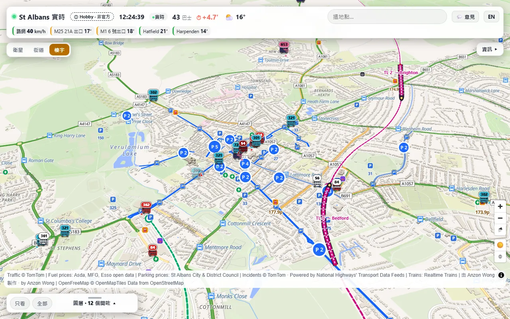
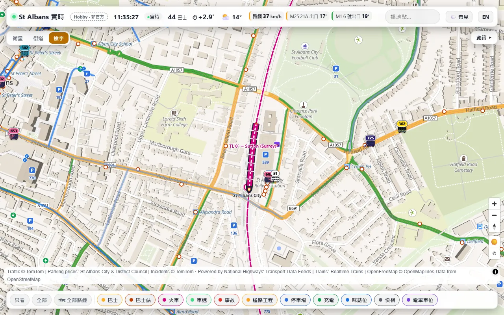
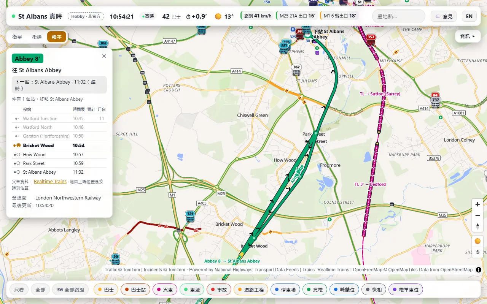
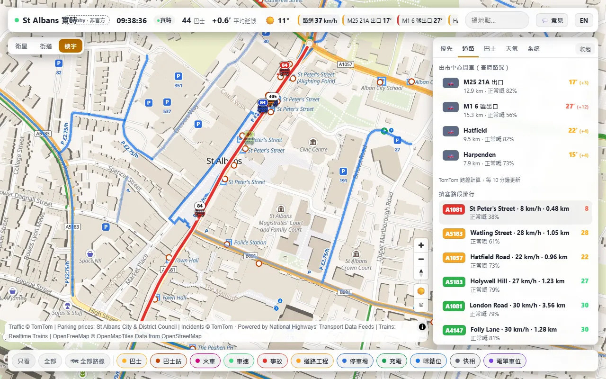
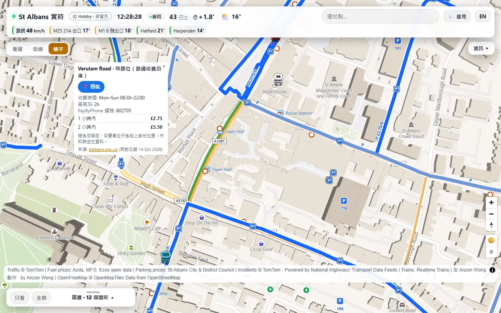
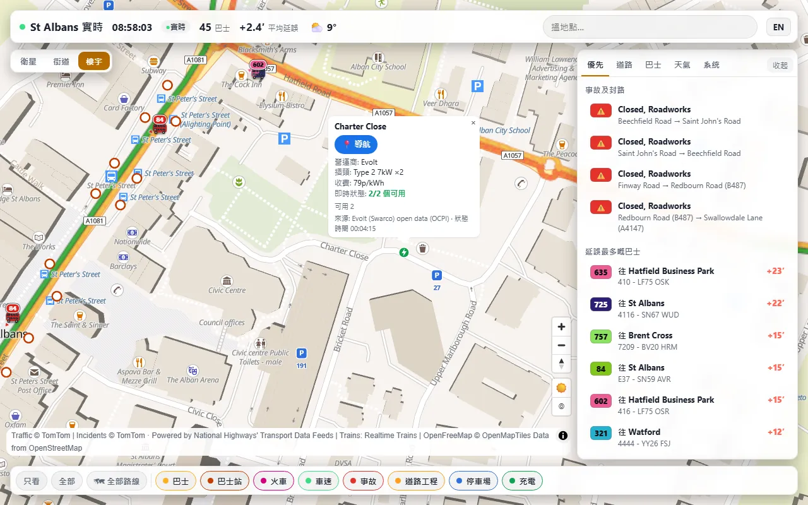
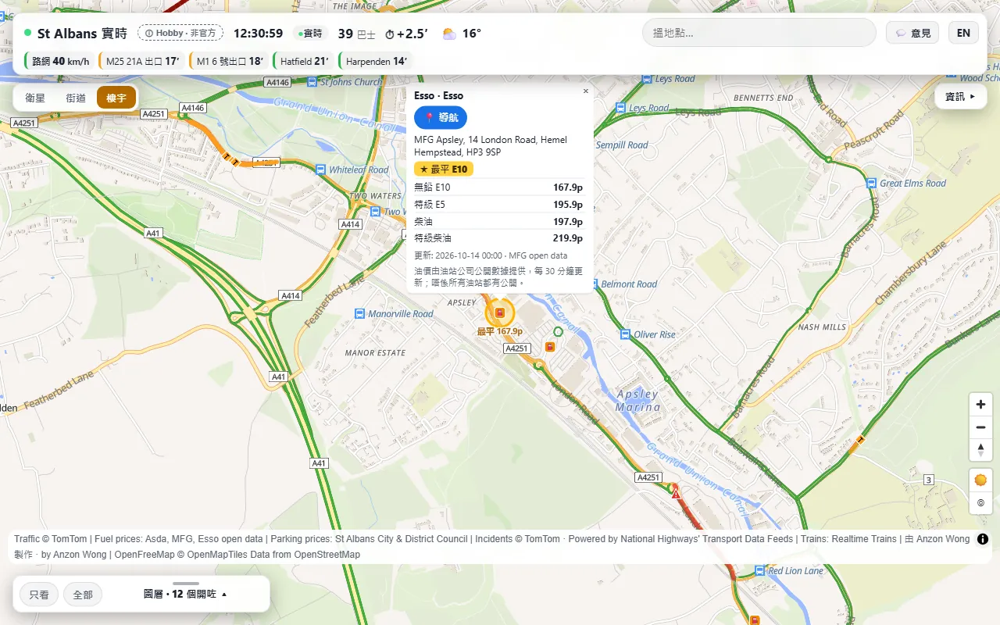
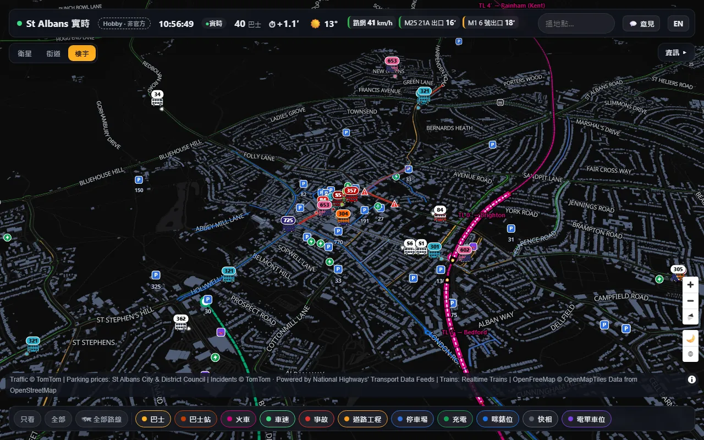

St Albans Live
A live 3D map of St Albans. Buses, trains, road speeds, parking, EV chargers and fuel prices, on one screen, in English or Traditional Chinese.

88 seconds, music only. Desktop first, then a phone.
- BusesEvery bus in the area, drawn in its operator's real livery and moving smoothly along the road between updates. Tap one for its route in both directions and its next stop.
- TrainsThameslink and Abbey Line trains as carriages on the real track. Tap one for every stop with booked and expected times and platforms. Positions are estimated from the live departure board, not GPS.
- RoadsLive road speeds, drive times to the M25, the M1, Hatfield and Harpenden, and a ranking of the slowest roads.
- Incidents and roadworksClosures, accidents, queues and roadworks, including the motorways.
- ParkingCar parks and pay and display streets with their published tariffs and PayByPhone location codes. There are no live space counts: none are published.
- EV chargersLive status and price per kWh where the operator publishes an open feed. Where it does not, the card says the price is not published.
- FuelPump prices from the retailers' open price data, with the cheapest E10 marked.
- Day and night, 繁/ENThe map turns dark at sunset, or by hand, and every label switches between English and Traditional Chinese.







I built it in about a day, on 13 and 14 October 2026, by directing an AI agent and checking every version on screen.
It is plain HTML and JavaScript, with MapLibre GL JS for the 3D map. Small Cloudflare Pages Functions fetch the live feeds, cache them and keep every API key on the server, so no key reaches the browser.
Six versions in two days, shaped by four rounds of my own comments: smaller buses with legible route numbers, trains as carriages, parking meters you can see at night, and a layer drawer that suits a phone.
- Busesbustimes.org (Bus Open Data)
- TrainsRealtime Trains
- Speeds, drive times, incidentsTomTom
- Motorway closures and roadworksPowered by National Highways' Transport Data Feeds
- Parking tariffsSt Albans City and District Council, APCOA, SABA
- EV chargersOpen data from Evolt (Swarco), MFG EV Power and GeniePoint; locations from OpenStreetMap
- Fuel pricesOpen price data from Asda, MFG and Esso
- MapMapLibre, OpenFreeMap, © OpenStreetMap contributors, Esri World Imagery
- Routes, weather, searchOSRM, Open-Meteo, Photon (Komoot)
A personal hobby project, not an official service of the council, the bus or train operators or any data provider. For reference only: do not rely on it for navigation, safety or travel decisions. Live data can be late, wrong or missing, and train positions are estimates.